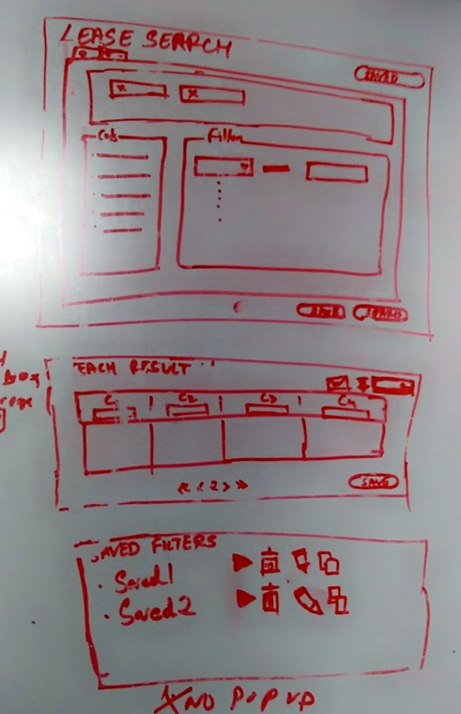
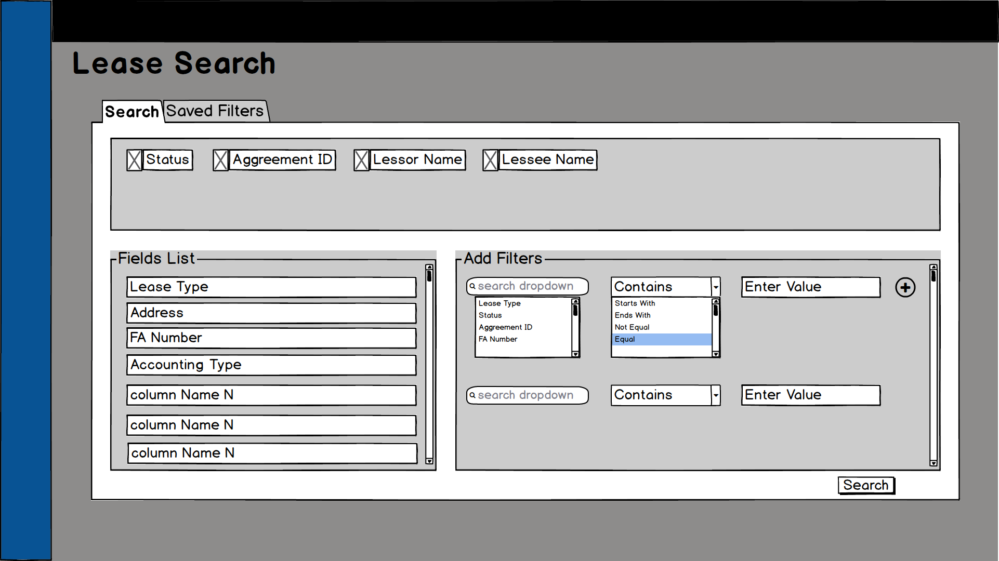
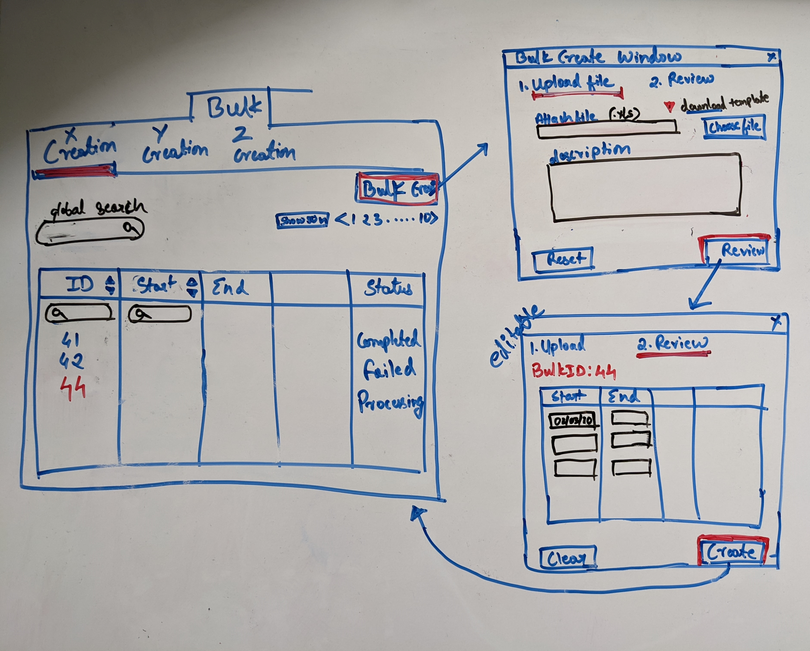
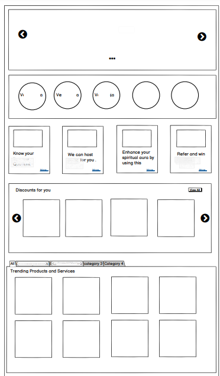
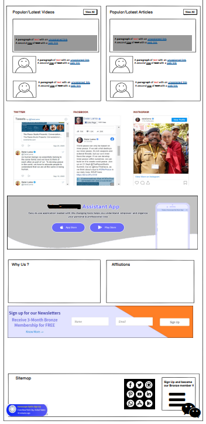
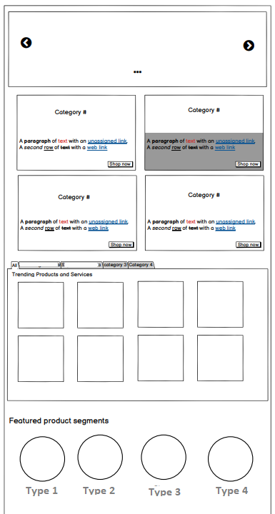

My Portfolio
I will be eternally grateful to Webtrigon for my first internship, where I got my first taste of product management while interning for a company shortly after finishing my bachelor's degree, where I worked on SaaS software and websites, gathering requirements and designing wireframes. I witnessed the entire product development process, from research to planning to design to implementation and release.
I started out as a data analyst, assisting the product management team in making decisions as part of product development. I gradually learned business processes and was promoted to business analyst, where I optimized and upgraded the most complex process workflows in the application to make it financially compliant with regulatory boards, saving them nearly $400k USD per year. Within a year, I was promoted to product owner and was one of the youngest in Accenture India, where I, along with three other Product Owners, migrated the entire application from packaged software to a standalone one that we built from the ground up in an agile environment. I was in charge of everything from ideation to design, implementation, and post-release support.The next on the product roadmap was to make applications intelligent by incorporating AI; unfortunately, we lacked the necessary product talent to carry this out.
After recognizing the gap, I assumed that a masters degree would provide me with an advantage, and I envisioned myself installing AI features on applications. Therefore, I started pursuing my Masters Degree in Data Science to give me that edge in this technical world. Amidst that, I was given the opportunity to intern with an ad-tech company as a product development intern, where I worked with a team to brainstorm and develop new MVPs/prototypes for the company. I also worked with product analytics to develop strategies for increasing foot traffic to our product by optimizing search engine attributes of the website and product.
At this checkpoint in my life, having gained experience in UX, content management , social media marketing and product management along with my masters has put mem in the top skill bracket, where I hope to help companies in installing intelligent AI features onto their product.
SOCIAL MEDIA RESEARCH INTERN (WEBTRIGON TECHNOLOGIES PVT LTD) - MAY 2016 - OCT 2016
Before, I joined Accenture in 2016, I was working with start up where I was working as social media research intern. I got a chance to setup digital profile of clients. Digital portfolios included Social media, website and its maintenance.Responsibilities:
I interned there for about 6 months. And later, started working in Accenture.
- Talking to clients, to find out how they want their social media or web pages to be implemented.
- Wireframe walk throughs.
- Creating content and media, curated as per the SEO standards.
- Optimizing content for better SEO rankings.
- Creating Social Media profiles and orchestrating the content as per clients’ campaign/business needs.
- Apply social media strategies to gain followers and converting them into clients.
DATA ANALYST (ACCENTURE) - NOV 2016 - DEC 2016
Responsibilities:
- Analyzing the workflow and tracking data flow population.
- Communicating with clients and presenting data inconsistencies by visualizations using excel.
- Data Handling & Data Cleanup - creating scripts and executing them.
- Creating new tables with new and merged columns.
- Handling Adhoc report requests.
- Optimizing Payment processing.
- Retracing steps for the releases.
- Testing modules - by being a part of UAT testing team.
- Creating Unix scripts to clean up the directory and archive them.
- Building test suites, test scripts and test cases for the developed modules as part of sanity test.
- Performing sanity tests with respect to data and while executing SQL and UNIX scripts.
BUSINESS ANALYST (ACCENTURE) - JAN 2017 - JAN 2018
Project 1:Workflow modification and components addition
- Tracked the data flow within the workflow.
- Added buttons and text buttons.
- Created packages and moved them to a different environment.
- Deployed my very first package.
Project 2: Data Cleanup and New Form addition
- Researched the contact module interaction with other modules/entities.
- Interacted with clients by creating wireframes and placement of fields.
- Interacted with clients regarding the contact data cleanup activity.
Project 3: New feature MVP
- Assessing the lease package document and highlighting the sections that needed to be implemented
- Interacting with clients regarding the functionalities of the new highlighted and its value add to the lease package flow
- Creating MVPs and demonstrating the reports to the clients.
Project 4 : Worked on 3 year old tickets:
Context : I was given a production issue of 8 tickets that were untouched for a couple of years, as it belonged to one of complicated modules called the Straight Line Rent. This was one of challenging moments I have been through as I had to understand complexity and go though several workflows to find out placing and logic.
- Understood the tickets and the languages
- Went through the whole workflow and process of SLR
- Learned how the SLR module interacts with other modules
- Interacted with accounting team on how the output should be.
- Narrowed down the issue and root cause.
- Reinvented the full logic while coming up with testing regimes and report exchanges.
- Implemented the new logic and deployed it.
- Provided support whenever there were production tickets related to modules around SLR or on SLR modules.
PRODUCT OWNER (ACCENTURE) - JAN 2017 - JAN 2018
Responsibilities: Creation of a product prototype project
- Creating data catalogue and dictionary for all the modules. Interacting with clients regarding the unknown modules and discussing which non-value added modules that need to be deleted.
- Creating functional documents for all the modules.
- Creating wireframes and designing screens with help of UX designer.
- Contributing to 2 automations and 2 innovative upgrades for existing application.
- Presenting MVPs to stakeholders and acquiring a 7 million dollar project.
- Creating Wireframes for Lease search and accounting module.
Building a product from ground upPRODUCT OWNER : Migrating product from tool to standalone application
- Written almost 100+ User Stories, by managing 2 teams
- Implemented 4 innovative bulk features - Bulk PG approval, Bulk PG creation Bulk Lease approval, Bulk Lease Package creation.
- Came up with new engine to monitor the SLR variables as part of preemptive reporting.
- Was part of refactoring team, where I had to UAT all the refactored code and consolidate all the code related metrics to monitor the code quality.
- Groomed features with clients
- Analyzed particular features from the application stand point
- Understanding the pain points and objectives to be achieved
- Analyzing data from a data standpoint
- Created success metrics
- Created user stories and reviewed them with the product team
- Implemented the code, demonstrated the same in a weekly iteration. Any changes suggested, if they were time consuming, were pushed to backlogs
- Gave regular status updates.

Lead Business Intelligence Intern(Ved World) - JUL 2020 - DEC 2020
Responsibilities: Website / App development
- Creating Wireframes for the website upgrade.
- Preparing Business Use case documents and Pitch Deck for the CEO and CFO.
- Collaborating with the finance team to assess E-Commerce company valuation and visualized metrics using Tableau and Power BI.

PRODUCT DEVELOPMENT INTERN (BLIPBILLBOARD) - FEB 2022 - MAY 2022
Responsibilities: Product Development
- Brainstorming sessions with Senior product manager about my view on Product discovery
- Selected 2 MVPs for new project purposes.
- Created Technical design document.
- Integrated Pytrends API using Python
- Integrated Metabase database using Python
- Created Interactive visualizations.
- Generated Insights from Google Analytics and Search Console
- ©2022 . All rights reserved
- "Plant Trees Save Lives"